Terra Mater
SS 20
Tim Lissek & Thomas Rzepka
Our journy from this...
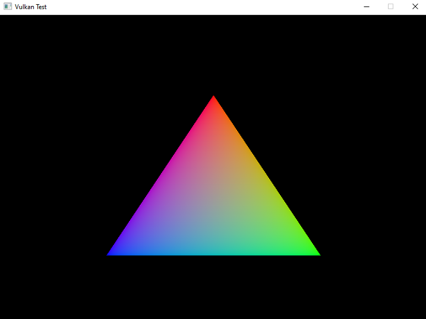To this...

Milestone 1
Vulkan Wrapper
- Hello Triangle:
- OpenGl: 100 loc
- Vulkan:
1000 loc - Vulkan is an lower level API:
- Higher work up-front
- Leads to better control
Vulkan Wrapper
Therefore we needed some sort of Wrapper around the Vulkan API

Cube
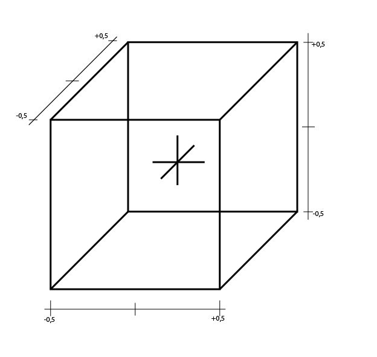Camera
- First flying camera
- attached to character
- change view with mouse / WASD
- field of view with + / -
Chunk Structure
Chunk size: 32 x 32 x 32 (Minecraft have 16 x 16 x 16)Input handling
- Using GLFW
- handles keyboard and mouse input
Input handling

Input handling

Milestone 2
Cube types

- Texture used from Minecraft.jar
- used new texture Format because of greedy meshing
Cube types
- All cube in game

World generation
Using a 2D Perlin noise texture as the base
World generation
Generating moisture using multiple octaves
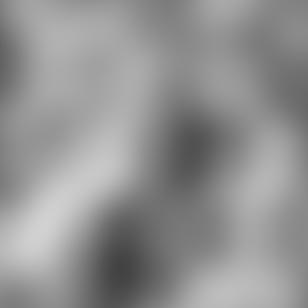World generation
And temperature using domain warping
World generation
Blending them into the final height map
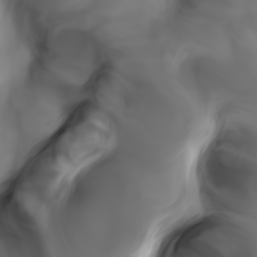World generation
- After having the height map the chunks get filled:
- One layer of bedrock at the bottom
- Lower 80 percent filled with stone
- Last 20 percent filled with blocks fitting to the biom
- Water is raised till the sea level
- Snow ontop of mountains
- Followed by trees, flowers and grass
World generation
Generating trees using an L-System and rules like this:
TreeDescription const Settings::simpleOakTreeDescription = {
"A",
{{'A', "TtaB"},
{'a', "ta"},
{'B', "T[+LL<L<L>L>l][-LL<L<L>L>l][*LL<L<L>L>l][/LL<L<L>L>l]bC"},
{'b', "T[+LL<L<L>L>l][-LL<L<L>L>l][*LL<L<L>L>l][/LL<L<L>L>l]bc"},
{'C', "T[+L][-L][*L][/L]D"},
{'c', "T[+L][-L][*L][/L]"},
{'D', "L"}},
4, CubeType::OAK_LOG, CubeType::OAK_LEAVES, 0.5f, 0.5f, 0.5f
};
World generation
Final result:
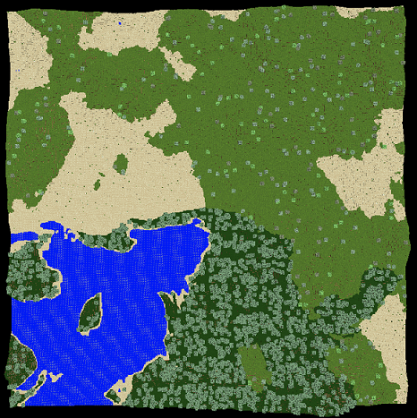Shading
- Our shading model consists of four parts:
- Texture sampling
- Diffuse shading
- Light level propagation
- (as used in Minecraft)
- Ambient occlusion
- (calculated in world space)
Light level propagation
Light gets propated through the world, starting from emitting cubes and the sky

(source: https://minecraft.gamepedia.com/Light)
Light level propagation
Resulting in a lower light level in shielded areas

Ambient occlusion
- Our proposal didn't include any form of ambient occlusion
- The resulting images looked flat and there was no sense of depth to them
- So we decided to add in ambient occlusion
- Our cube world made it extremly easy to implement ambient occlusion in world space
Ambient occlusion
For each vertex of an given cube one needs to check the neighbouring cubes:
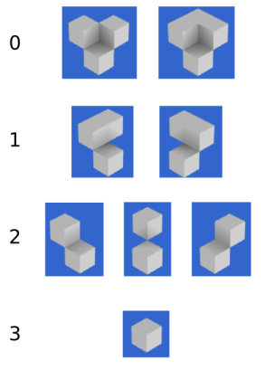(source: https://0fps.net/2013/07/03/ambient-occlusion-for-minecraft-like-worlds/)
Ambient occlusion
Passing the ambient occlusion value from the vertex to the fragment shader handles the needed interpolation

Ambient occlusion
Physics
- Used PhysX
- Character controller
- cubes are represented as PxRigidStatic objects
- colision detection
Character controller
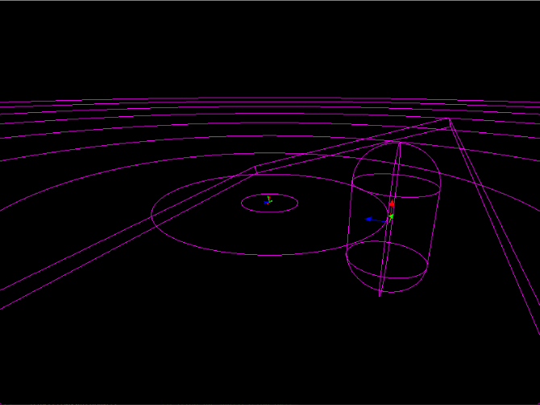Physics
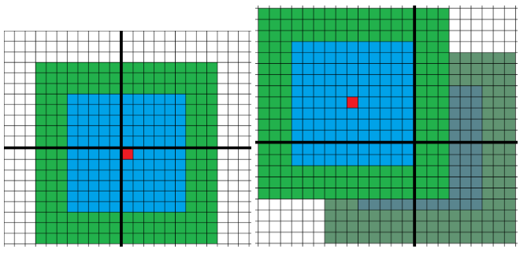- cubes are generated around the player
- when he moves out, new cubes will be created and old will be deleted
- generation indepented of the chunks
Milestone 3
Culling
- High geometric complexity:
- 16x16 loaded chunks stacks
- 2-5 chunks each
- 32x32x32 cubes inside one chunk
- 12 triangles for each cube
~301.989.888 triangles total- Result:
- Bad performance
Culling
- Therefore several techniques are implemented:
- Back-face culling
- Cube culling
- Face culling
- Greedy Meshing
- Frustum culling
Cube culling
In the first step we are culling all non visible cubes, before generating gpu data
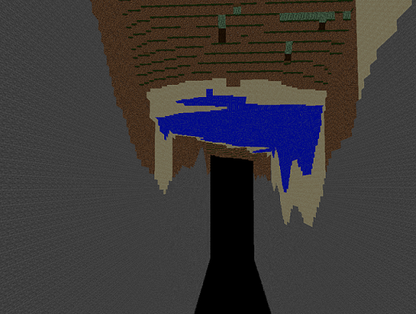Cube culling
The result: Only the top layer of blocks are still rendered
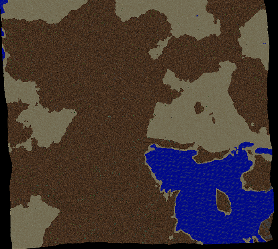Face culling
With culling also all non visible faces of the top layer, we can lower the triangle count even further

Greedy Meshing
- Before sending this set of faces to the gpu, there is one simple option left:
- Merging adjacent faces with the same attributes
- (Like light level, ambient occlusion value, ...)
- This is done by looping through an ordered set of the given faces, and trying to merge the lowest face onto the already merged faces
- Our implementation is doing this in two steps:
- Merging the input into the x direction
- Merging the result from step one into the z direction
Without Greedy Meshing

With Greedy Meshing

Frustum culling
A chunk gets only submitted for rendering, if it lies (partially) inside the view frustum
Placing / Removing cubes
- Left click removing cubes
- Right click adding new cubes
- Raycasting from origin to view direction
Raycast adding cube
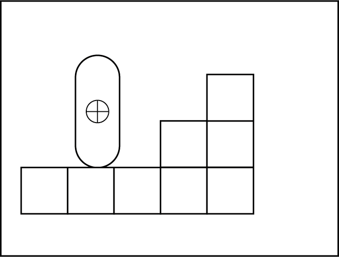Raycast adding cube
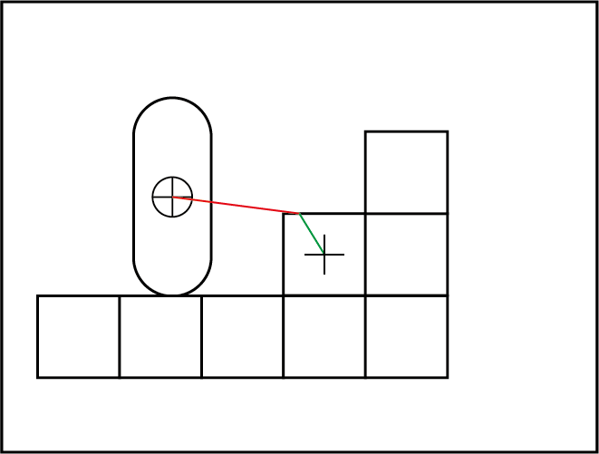Raycast adding cube
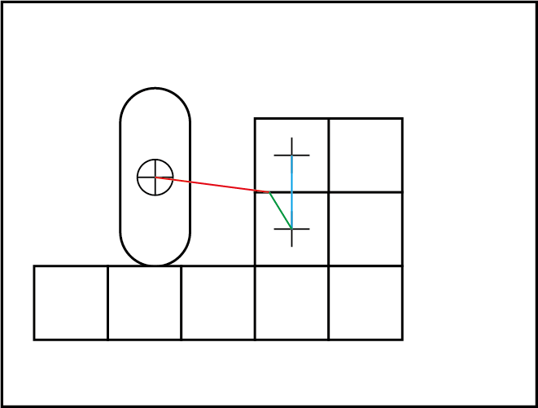Falling Cube
- Just added after removing a cube
- determine all sand cubes above hit cube
- determine landing position
- replace static cube with dynamic
- lock x, z transaction and rotation axes
- replace dynamic cube with static
Falling Cube
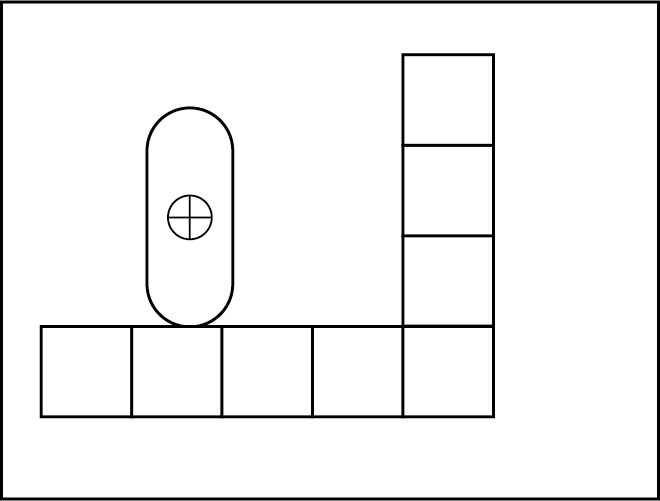Falling Cube
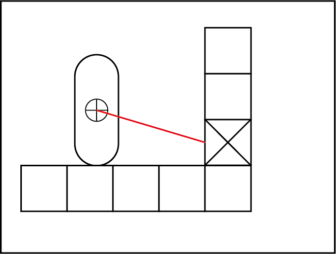Falling Cube
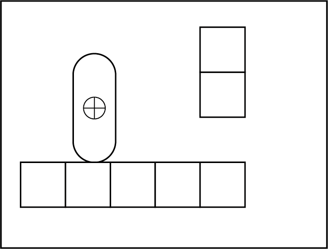Falling Cube
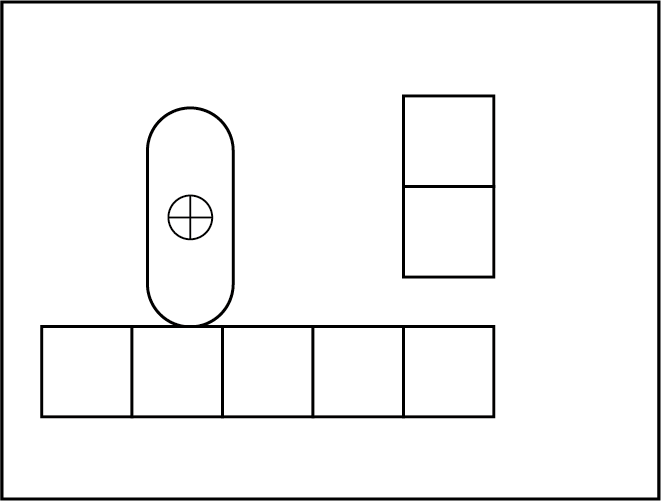Falling Cube
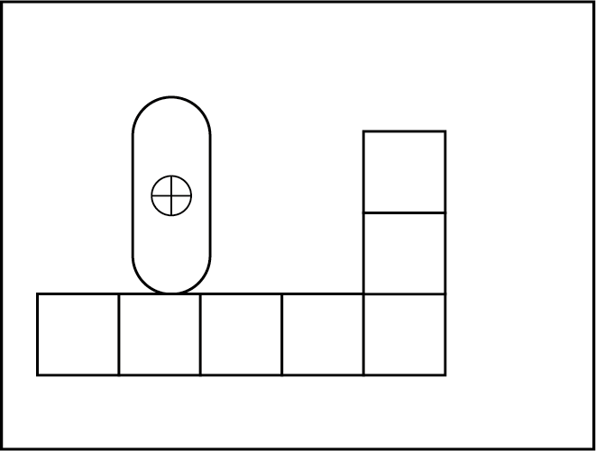3D objects
Can't reuse the compact cube vertex struct
struct Vertex {
glm::vec3 position;
glm::vec2 textureCoordinate;
unsigned char normalID;
unsigned char textureID;
unsigned char ambientOcclusionValue;
unsigned char lightLevel;
}
3D objects
Updated vertex struct used for 3D object files only
struct BigVertex {
glm::vec3 position;
glm::vec2 textureCoordinate;
glm::vec3 normal;
unsigned char textureID;
}
3D objects
- Using two vertex layouts lead to new:
- Shaders
- Buffer and DeviceMemory
- Descriptor pool
- Descriptor set layout
- Descriptor sets
- Pipeline
- Luckily this was fairly easy, because the Vulkan wrapper hat functionality for all of this
3D objects
Modelled using Blender

Sunflowers
There are three different types of flowers, planted according to the biom data

Lotus
Each flower has a random position (inside the cube it's planted) and rotation

Succulent
They get submitted after the cubes, allowing the depth test to fail early, if the flower wouldn't be visible

Milestone 4
Waving grass
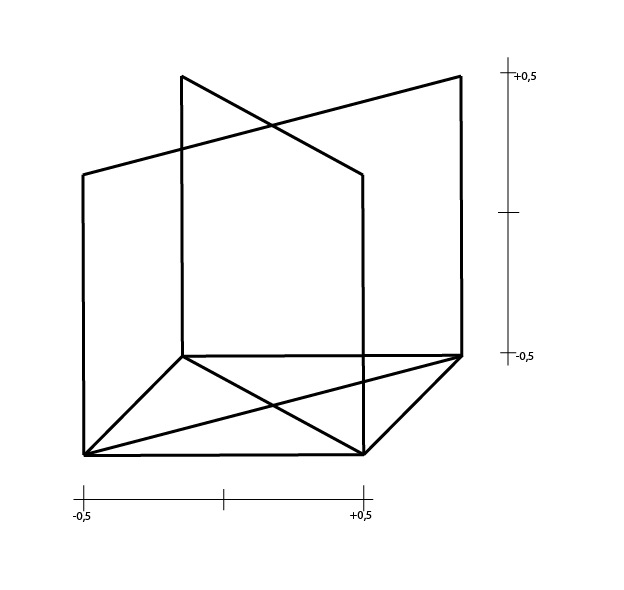Waving grass
- enabled blending for textures
- waving starts from half texture height
Waving grass
srcColorBlendFactor = VK_BLEND_FACTOR_SRC_ALPHA;
srcAlphaBlendFactor = VK_BLEND_FACTOR_SRC_ALPHA;
dstColorBlendFactor = VK_BLEND_FACTOR_ONE_MINUS_SRC_ALPHA;
dstAlphaBlendFactor = VK_BLEND_FACTOR_ONE_MINUS_SRC_ALPHA;
colorBlendOp = VK_BLEND_OP_ADD;
alphaBlendOp = VK_BLEND_OP_ADD;
Waving grass
Screenshot
- screenshots can be taken by pressing .
- screenshot will get an unique name
- File format is .ppm
Volumetric clouds
Using a different noise function called Worley noise

Volumetric clouds
But this time as 3D Texture:
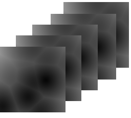Volumetric clouds
- Building a cloud 3D texture from the worley noise:
- Sampling with multiple frequencies
- For example: 2, 4, 8, 16 times a base frequency
- Inverting the results, using a weight
- inverted = 1.0f - weight * noise
- Clamping back to the range of [0.0f, 1.0f]
- Blending all frequencies into one noise texture
- Final range remap, making clouds less dense
Volumetric clouds
Resulting 3D cloud texture


Volumetric clouds
- Last Step is simple ray marching:
- Here we use the cloud texture to sample the density at any given point
- Along one camera ray 64 samples get evaluated
- For each sample another raymarching step towards the sun gets calculated
- Only using 6 samples here
- In the end everything along one camera ray gets accumulated
Volumetric clouds
The sampled position is offset by the time, creating the movement of the clouds
Day night cycle
- One day in game is 20 minutes long
- The sun rotation is determined by the time passed since last frame
- The algorithm for the atmospheric scattering is reused from our gpuc project
- (an photomode using path tracing for this game)
- Besides the atmospheric scattering, the shading for cubes and obj's got updated:
- This means they are using the dynamic sun position too
- Furthermore they get brighter and darker (but not too dark) depending on the in game time
Day night cycle
What helped us a lot
The VulkanWrapper
- Our wrapper around the vulkan api was probably the most helpful thing during development
- Because it removed the hassle of filling out the create/info structs
- Now we were able to test out new things in no time, since needed objects were only a few function calls away
- The upfront cost pays back really quickly, but brings many benefits later
Storing data to the disk
- Storing game data like the generated chunk data (or the worley noise) speed up the loading process up in a significant way
- Ofcourse this has an positiv influence to the gameplay,
- but it also helped us out to iterate faster to find suitable game settings
- (extremely the case for the worley noise)
Our debug functionality
- Things like the implemented frustum button or an normal shader
- Eventhough things like this seems simple they came in handy at later points in time
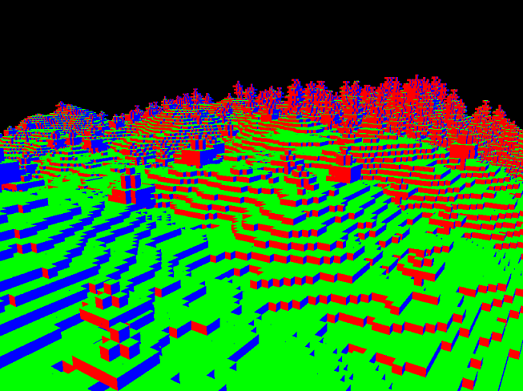
RenderDoc and Vulkan validation layers
- Since it was our first time using Vulkan we had some "beginner" bugs
- But reading the validation layers paired with checking the named locations inside Renderdoc finding those bugs was made extremly easy
What we would do different
Change out PhysX
- In our proposal we had listed PhysX as our physics engine, since the code snippets seemed simple,
- but the actual problem wasn't the usage of the sdk itself, but rather the integration of it into our project
- Therefore we would switch to a different physics engine in the future
Ordering of some Tasks
- Some tasks like for example the culling task, came out to be really important even from the beginning
- This was the reason why we needed to some leap aheads, allowing us to have usable performance during all times of development
- Needles to say, given a similar oppurtunity in the future, we definitly would change up the ordering of the tasks.
Thanks for your attention!
GUI
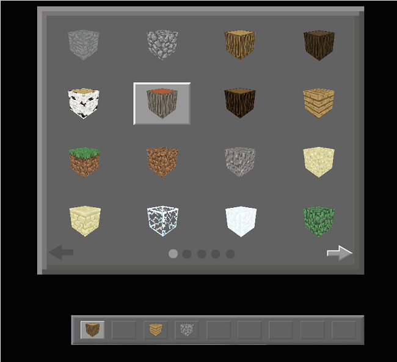GUI

GUI